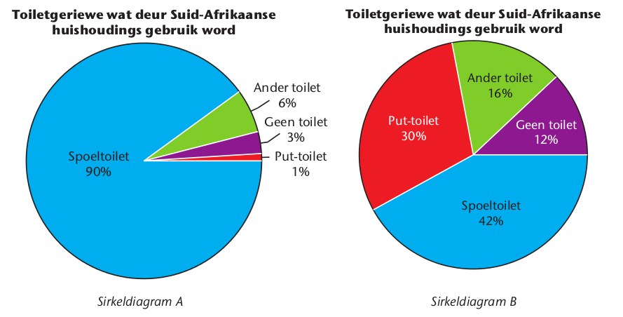
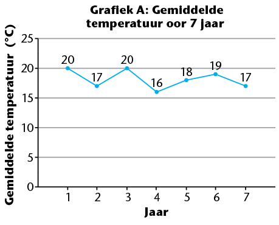
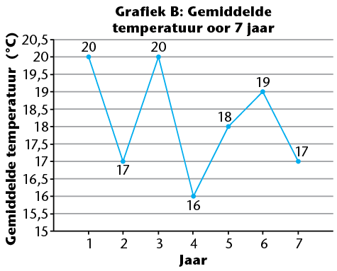

<div class="container">
  <div id="contents" class="col-md-12 main-content"><h1 xmlns="http://www.w3.org/1999/xhtml" id="toc-id-39">Interpreteer, ontleed en doen verslag oor data</h1>


    <p xmlns="http://www.w3.org/1999/xhtml" class="Body-opener-no-indent">In hierdie hoofstuk gaan jy kritiese data-ontledingsvaardighede ontwikkel en inoefen.
Dit beteken dat jy na data waaroor daar verslag gedoen is sal kyk, maar ook na die hele
datahanteringsiklus wat gevolg is. Jy sal ook moet besluit watter manier die beste is om
data in ‘n gegewe situasie voor te stel en jy sal verskuilde data moet kan identifiseer. Party
maniere is meer geskik as ander om verskillende tipes data op te som asook om sentrale
neigings in die data uit te wys. Jy moet ook bewus wees van maniere waarop vooroordeel
(sydigheid) in data kan voorkom of insluip – in die beplanningsfase sowel as tydens
insameling, ontleding, voorstelling en/of opsomming van die data.
</p>

    <h2 xmlns="http://www.w3.org/1999/xhtml" id="toc-id-40">Ontleed die insameling van data krities</h2>

    <p xmlns="http://www.w3.org/1999/xhtml" class="Body-no-indent">Die metodes van dataverkryging kan soms lei tot vooroordeel, ook sydigheid genoem, en
misleidende data. Dit is nie noodwendig altyd die navorser se bedoeling nie – dit gebeur
dikwels as die bron van die data of die metode van insameling nie deeglik beplan is nie.
</p>

    <p xmlns="http://www.w3.org/1999/xhtml" class="Body">In hoofstuk 6 het jy geleer dat ‘n steekproef groot genoeg moet wees en lukraak uit die
populasie gekies moet word om te verseker dat dit verteenwoordigend is. As data slegs uit
‘n sekere deel van die populasie gekies word, kan daar sydigheid ten gunste van daardie
deel wees. Die navorser moet bewus wees van al die plekke waar sydigheid kan voorkom
en behoort die hele datahanteringsproses so te ontwerp dat dit nie gebeur nie.
</p>

    <p xmlns="http://www.w3.org/1999/xhtml" class="Body">Wanneer jy gepubliseerde statistiek lees, moet jy altyd daarvan bewus wees dat jy ook
inligting moet hê oor hoe die data ingesamel is, wanneer dit ingesamel is en hoe die
steekproef gekies is. Data kan met verloop van tyd verander, dus moet jy weet wanneer
dit ingesamel is. Hierdie inligting moet by elke verslaggewing oor data gegee word.
</p>


    <h3 xmlns="http://www.w3.org/1999/xhtml" class="Head-investigation">Databronne en metodes van insameling</h3>

    <p xmlns="http://www.w3.org/1999/xhtml" class="Body-investigation">1. Lees die volgende paragraaf en beantwoord die vrae wat daarop volg.
</p>

    <p xmlns="http://www.w3.org/1999/xhtml" class="Body-investigation para-style-override-28"><i>‘n Onlangse studie het onthul dat 50% van hoërskoolleerders sigarette rook, 45% alkohol 	
  gebruik en 60% dwelms misbruik. Dit is ‘n aanduiding van die algemene swak gesondheid
   en ook maatskaplike probleme van die tieners in ons land.
</i></p>

    <p xmlns="http://www.w3.org/1999/xhtml" class="ques-a-">(a) Stem jy saam dat die syfers hoog genoeg is om tot die slotsom te kom dat die
gewoontes van hierdie tieners ongesond is?
</p>
    <hr xmlns="http://www.w3.org/1999/xhtml"/>
<p xmlns="http://www.w3.org/1999/xhtml" class="ques-a--2-space-below">(b) Kan ons aflei van die data hierbo
</p>

    <ul xmlns="http://www.w3.org/1999/xhtml"><li class="Body-bullet--indented- para-style-override-69">
        <span class="char-style-override-7"/> Wat die steekproef van die studie was 
as
        <hr/></li>

      <li class="Body-bullet--indented- para-style-override-69">
        <span class="char-style-override-7"/> Waar hierdie data ingesamel is 

        <hr/></li>

      <li class="Body-bullet--indented- para-style-override-69">
        <span class="char-style-override-7"/> Wanneer die data ingesamel is? 

        <hr/></li>
    </ul><p xmlns="http://www.w3.org/1999/xhtml" class="ques-a-">(c) Sou die data ‘n betroubare beeld van al die tieners in die land wees as die
steekproef uit tien tieners, wat almal in ‘n gebied woon wat bekend is vir
dwelm- en alkoholmisbruik, bestaan het?
</p>
    <hr xmlns="http://www.w3.org/1999/xhtml"/>
<p xmlns="http://www.w3.org/1999/xhtml" class="ques-a-">(d) Wat dink jy sou ‘n beter steekproef gewees het?
</p>
    <hr xmlns="http://www.w3.org/1999/xhtml"/>
<p xmlns="http://www.w3.org/1999/xhtml" class="ques-a-">(e) Hoekom is dit belangrik om te weet wanneer hierdie data ingesamel is?
</p>
    <hr xmlns="http://www.w3.org/1999/xhtml"/>
<p xmlns="http://www.w3.org/1999/xhtml" class="Body-investigation">2. Hierdie sirkeldiagramme toon toiletgeriewe van huishoudings in Suid-Afrika.
</p>

      <div xmlns="http://www.w3.org/1999/xhtml" class="frame-29"></div>
      

<p xmlns="http://www.w3.org/1999/xhtml" class="ques-a-">(a) Watter soort toiletgeriewe het die meeste mense volgens sirkeldiagram A en
watter persentasie van huishoudings is dit?
</p>
    <hr xmlns="http://www.w3.org/1999/xhtml"/>
<p xmlns="http://www.w3.org/1999/xhtml" class="ques-a-">(b) Wat sal jou antwoord op die vraag in (a) wees as jy sirkeldiagram B sou gebruik 		
om die vraag te beantwoord?
</p>
    <hr xmlns="http://www.w3.org/1999/xhtml"/>
<p xmlns="http://www.w3.org/1999/xhtml" class="ques-a-">(c) Skryf ‘n kort verslag in een paragraaf oor die data in die sirkeldiagramme.
</p>
    <hr xmlns="http://www.w3.org/1999/xhtml"/>
<p xmlns="http://www.w3.org/1999/xhtml" class="ques-a-">(d) Wat kan jy uit die data in sirkeldiagram A aflei?
</p>
    <hr xmlns="http://www.w3.org/1999/xhtml"/>
<p xmlns="http://www.w3.org/1999/xhtml" class="ques-a-">(e) Wat kan jy uit die data in sirkeldiagram B aflei?
</p>
    <hr xmlns="http://www.w3.org/1999/xhtml"/>
<p xmlns="http://www.w3.org/1999/xhtml" class="ques-a-">(f) Hoe kan die jaar waarin die data ingesamel is verantwoordelik wees vir die
verskil in die data?
</p>
    <hr xmlns="http://www.w3.org/1999/xhtml"/>
<p xmlns="http://www.w3.org/1999/xhtml" class="ques-a-">(g) Die grafiek wys dieselfde data as die twee sirkeldiagramme. Is dit makliker om die
twee stelle data te vergelyk op die sirkeldiagramme of die dubbele staafgrafiek?
</p>
    <hr xmlns="http://www.w3.org/1999/xhtml"/>
<p xmlns="http://www.w3.org/1999/xhtml" class="ques-a-"><span></span></p>

    <p xmlns="http://www.w3.org/1999/xhtml" class="ques-a-">(h) Wys die sirkeldiagram of die dubbele staafgrafiek die beste watter persentasie van
soorte toiletgeriewe in Suid-Afrika gebruik word?
</p>
    <hr xmlns="http://www.w3.org/1999/xhtml"/><h2 xmlns="http://www.w3.org/1999/xhtml" id="toc-id-41">Ontleed die voorstelling van data krities</h2>

    <p xmlns="http://www.w3.org/1999/xhtml" class="Body-no-indent">Grafieke is nie altyd wat hulle op die oog af lyk nie! As jy fyner kyk, mag jy dalk sien dat hulle jou mislei om tot die verkeerde gevolgtrekking te kom. Werk deur die aktiwiteit hier
onder om uit te vind hoe dit kan gebeur.
</p>

    <h3 xmlns="http://www.w3.org/1999/xhtml" class="Head-investigation">Manipulasie in datavoorstelling</h3>

    <p xmlns="http://www.w3.org/1999/xhtml" class="Body-no-indent">Die grafieke wat volg wys die gemiddelde temperature wat op dieselfde plek, op dieselfde tyd gemeet is.
</p>

    <span xmlns="http://www.w3.org/1999/xhtml">
       
  
    </span>

    <p xmlns="http://www.w3.org/1999/xhtml" class="Body-investigation">1. Wys albei grafieke presies dieselfde data?
</p>
    <hr xmlns="http://www.w3.org/1999/xhtml"/>
<p xmlns="http://www.w3.org/1999/xhtml" class="Body-investigation">2. Hoekom lyk die grafieke so verskillend?
</p>
    <hr xmlns="http://www.w3.org/1999/xhtml"/>
<p xmlns="http://www.w3.org/1999/xhtml" class="Body-investigation-hanging">3. Watter van die grafieke sal mense gebruik om te beklemtoon dat daar groot verskille in die temperature oor die jare is? Verduidelik jou antwoord.
</p>
    <hr xmlns="http://www.w3.org/1999/xhtml"/>
<p xmlns="http://www.w3.org/1999/xhtml" class="Body-investigation-hanging">4. Stel ‘n manier voor om die vertikale skaal van grafiek A te verander om nog meer te
benadruk dat daar geen groot verskille tussen temperature oor die jare was nie.
</p>
    <hr xmlns="http://www.w3.org/1999/xhtml"/>
<p xmlns="http://www.w3.org/1999/xhtml" class="Body-investigation-hanging">5. Skryf ‘n kort verslag oor Grafiek A. Sluit ook ‘n voorspelling in oor temperature vir
Jare 8 en 9.
</p>
    <hr xmlns="http://www.w3.org/1999/xhtml"/>

    <h2 xmlns="http://www.w3.org/1999/xhtml" id="toc-id-42">Ontleed opsommende statistiek krities</h2>

    <p xmlns="http://www.w3.org/1999/xhtml" class="Body-no-indent">Dit is soms nodig om ‘n ander persoon in te lig oor ‘n datastel waaraan jy gewerk het.
Wanneer jy dit doen, sal jy dit waarskynlik op ‘n kort en bondige manier doen; met
ander woorde, jy sal dit die ander persoon wil spaar om na al die waardes in die datastel
te moet kyk. Jy sal ook sommige aspekte van die data wil beklemtoon. Dit is waarom ons
opsommende statistiek soos die volgende gebruik:
</p>

    <ul xmlns="http://www.w3.org/1999/xhtml"><li class="Body-bullet"><span class="char-style-override-7"/> maatstawwe van sentrale neiging (tipiese waardes):  <b>modus</b>, <b>mediaan</b> en <b>gemiddeld</b></li>

      <li class="Body-bullet"><span class="char-style-override-7"/> matstawwe van verspreiding (waardes wat aandui hoe die data versprei is): die
kleinste en die grootste waardes en die verskil tussen hulle (die 
<b>omvang</b>).</li>
    </ul><p xmlns="http://www.w3.org/1999/xhtml" class="Body-no-indent para-style-override-7">Opsommende statistiek verskaf nie volledige inligting oor data nie. Van die inligting
is altyd verlore en so kan opsommende statistiek misleidend wees, veral as daar
<b>uitskieters</b> is, dit is waardes wat baie van die meerderheid van die waardes verskil.
</p>

    <h3 xmlns="http://www.w3.org/1999/xhtml" class="Head-investigation">Hoe opsommende statistiek misleidend kan wees</h3>

    <p xmlns="http://www.w3.org/1999/xhtml" class="Body-investigation-hanging">1. Die bestuurder van ‘n klein sakeonderneming is gevra watter maandelikse salarisse sy
werknemers kry. Sy antwoord:
 <i>Die gemiddeld van die salarisse is R13 731
</i></p>

    <p xmlns="http://www.w3.org/1999/xhtml" class="ques-a-">(a) Dink jy dat die bestuurder se antwoord ‘n goeie beskrywing van die salarisse is?
</p>
    <hr xmlns="http://www.w3.org/1999/xhtml"/>
<p xmlns="http://www.w3.org/1999/xhtml" class="ques-a-">(b) Watter van die volgende sal jy verkies om te weet om ‘n idee te kan vorm van
 die salarisse wat by die onderneming betaal word: die
 <i>mediaan</i> of die <i>modus</i> of die <i>omvang</i> of die 
 <i>hoogste en laagste
</i> salaries?</p>
    <hr xmlns="http://www.w3.org/1999/xhtml"/>
<p xmlns="http://www.w3.org/1999/xhtml" class="Body-investigation-hanging">2. Die werklike maandelikse salarisse van die 13 personeellede in die klein onderneming
van vraag 1, word hier onder gegee.
</p>
<table xmlns="http://www.w3.org/1999/xhtml" class="no-border"><tbody>
    <tr><td>R3 500</td><td> R3 500 </td><td> R3 500</td><td>  R3 500</td><td>  R3 500</td> </tr>

    <tr><td>R4 200</td><td>  R4 200</td><td>  R4 200</td><td>  R4 400 </td><td> R12 000 </td></tr>
    <tr><td>R28 000</td><td> R44 000 </td><td>R60 000</td> <td/> <td/></tr>
    </tbody></table>

    <p xmlns="http://www.w3.org/1999/xhtml" class="ques-a-">Watter verkeerde indruk kan jy oor die personeel se salarisse kry as jy nie bostaande
syfers ken nie, maar net weet dat die gemiddelde salaris R13 731 is?
</p>
    <hr xmlns="http://www.w3.org/1999/xhtml"/>
<p xmlns="http://www.w3.org/1999/xhtml" class="Body-investigation-hanging">3. As slegs een opsommende statistiek gebruik word om inligting oor die salarisse by die
onderneming te gee, watter een van die volgende dink jy sal die beste wees? Gee redes
vir jou keuse.
</p>

    <p xmlns="http://www.w3.org/1999/xhtml" class="ques-a-">A. Die modus</p>

    <p xmlns="http://www.w3.org/1999/xhtml" class="ques-a-">B. Die omvang
</p>

    <p xmlns="http://www.w3.org/1999/xhtml" class="ques-a-">C. Die mediaan
</p>

    <p xmlns="http://www.w3.org/1999/xhtml" class="ques-a-">D. Die laagste en die hoogste salarisse.
</p>
    <hr xmlns="http://www.w3.org/1999/xhtml"/>
<p xmlns="http://www.w3.org/1999/xhtml" class="Body-investigation-hanging para-style-override-7">4.
    Die onderskeie maandelikse salarisse van werknemers by ‘n ander klein besigheid
word hier onder gegee.
</p>

    <p xmlns="http://www.w3.org/1999/xhtml" class="ques-a- para-style-override-14">R34 000    R35 000    R3
    400    R31 000    R32 000</p>

    <p xmlns="http://www.w3.org/1999/xhtml" class="ques-a-">(a) Hoekom sou die gemiddeld nie ‘n goeie manier wees om hierdie data op te som nie?
</p>
    <hr xmlns="http://www.w3.org/1999/xhtml"/>
<p xmlns="http://www.w3.org/1999/xhtml" class="ques-a-">(b) Bereken die gemiddelde salaris.
</p>
    <hr xmlns="http://www.w3.org/1999/xhtml"/>
<p xmlns="http://www.w3.org/1999/xhtml" class="Body-investigation-hanging">5. Hierdie data wys hoeveel bokse sjokolade ‘n winkel in tien opeenvolgende maande verkoop het.
</p>

    <p xmlns="http://www.w3.org/1999/xhtml" class="ques-a-">42    38    179    40    43    40    48    39    41    42</p>

    <p xmlns="http://www.w3.org/1999/xhtml" class="ques-a-">(a) Watter een sou die beste opsommende beskrywing van die data gee, die
gemiddeld of die mediaan? Verduidelik jou antwoord.
</p>
    <hr xmlns="http://www.w3.org/1999/xhtml"/>
<p xmlns="http://www.w3.org/1999/xhtml" class="ques-a-">(b) Gee ‘n goeie opsommende beskrywing van die data sonder om die mediaan
 te gebruik.
</p>
    <hr xmlns="http://www.w3.org/1999/xhtml"/>
<p xmlns="http://www.w3.org/1999/xhtml" class="ques-a-">(c) Sou dit sin maak om die uitskieter, 179, uit te sluit wanneer die gemiddelde
maandelikse verkope bereken word? Verduidelik jou antwoord.
</p>
    <hr xmlns="http://www.w3.org/1999/xhtml"/><h3 xmlns="http://www.w3.org/1999/xhtml" class="Head-investigation">Manipulasie in die rapportering van opsommende statistiek</h3>

    <p xmlns="http://www.w3.org/1999/xhtml" class="Body-no-indent">Die modus, mediaan en gemiddeld lig elkeen verskillende stukkies inligting uit oor
dieselfde datastel. Afhangende van die soort datastel wat jy het, kan hulle baie van
mekaar verskil.
</p>

    <p xmlns="http://www.w3.org/1999/xhtml" class="Body">Soms kies mense statistiek wat nie die tipiese waardes wys nie, maar eerder ‘n waarde
wat beter is vir hulle doeleindes.
.</p>

    <p xmlns="http://www.w3.org/1999/xhtml" class="Body-investigation-hanging">1. Thivha verkoop gerestoureerde meubels. Volgens hom verkoop hy gewoonlik sewe items per week en het hy die data om dit te bewys. Sy strokies wys dat hy 52 verkope
oor ‘n tydperk van agt weke gehad het.
</p>

    <p xmlns="http://www.w3.org/1999/xhtml" class="ques-a-">(a) Kan jy uit die data hier bo aflei of Thivha se weergawe oor die verkope waar is?
</p>
    <hr xmlns="http://www.w3.org/1999/xhtml"/>
<p xmlns="http://www.w3.org/1999/xhtml" class="ques-a-">(b) Nadat jy die strokies van die agt weke goed bestudeer het, weet jy nou dat die
getal verkope per week soos volg was:
</p>

    <p xmlns="http://www.w3.org/1999/xhtml" class="ques-a-">3, 4, 4, 4, 4, 5, 6, 22</p>

    <p xmlns="http://www.w3.org/1999/xhtml" class="ques-a-">Bepaal die modus en die mediaan van die stel data.
</p>
    <hr xmlns="http://www.w3.org/1999/xhtml"/>
<p xmlns="http://www.w3.org/1999/xhtml" class="ques-a-">(c) Watter opsommingstatistiek weerspieël volgens jou Thivha se verkoopsyfers
die beste? Verduidelik jou antwoord.
</p>
    <hr xmlns="http://www.w3.org/1999/xhtml"/>
<p xmlns="http://www.w3.org/1999/xhtml" class="Body-investigation-hanging">2. Hierdie data wys die bedrag sakgeld wat ‘n groep leerders elke week ontvang.
</p>

    <table xmlns="http://www.w3.org/1999/xhtml" id="table-100" class="no-border"><tbody><tr class="Row-Column-244"><td>
            <p class="Table-text-left">R0</p>
          </td>

          <td>
            <p class="Table-text-left">R0</p>
          </td>

          <td>
            <p class="Table-text-left">R5</p>
          </td>

          <td>
            <p class="Table-text-left">R10</p>
          </td>

          <td>
            <p class="Table-text-left">R10</p>
          </td>

          <td>
            <p class="Table-text-left">R10</p>
          </td>

          <td>
            <p class="Table-text-left">R10</p>
          </td>

          <td>
            <p class="Table-text-left">R20</p>
          </td>

          <td>
            <p class="Table-text-left">R20</p>
          </td>

          <td>
            <p class="Table-text-left">R50</p>
          </td>
        </tr></tbody></table><p xmlns="http://www.w3.org/1999/xhtml" class="ques-a-">(a) Bepaal die modus, mediaan, gemiddeld en omvang van die stel data.
</p>
    <hr xmlns="http://www.w3.org/1999/xhtml"/>
<p xmlns="http://www.w3.org/1999/xhtml" class="ques-a-">(b) Die tiener wat R5 per week ontvang, wil haar ouers oortuig om haar meer sakgeld
te gee. Watter opsommende statistiek sal sy gebruik om haar ouers te oortuig? 		
Verduidelik jou antwoord.
</p>
    <hr xmlns="http://www.w3.org/1999/xhtml"/>
<p xmlns="http://www.w3.org/1999/xhtml" class="ques-a-">(c) Watter opsommende statistiek dink jy stel die weeklikse sakgeld van die groep
leerders die beste voor? Verduidelik jou antwoord.
</p>
    <hr xmlns="http://www.w3.org/1999/xhtml"/>
  </div>
</div>